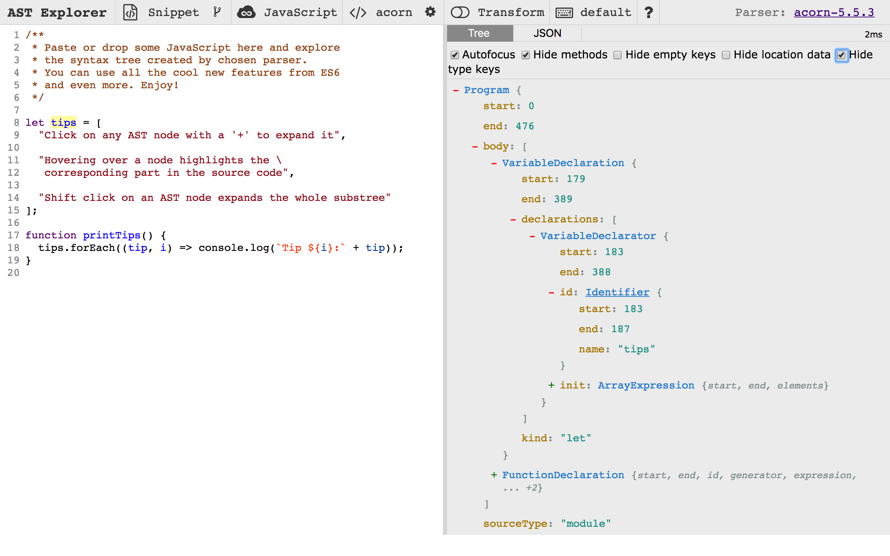

JavaScript 解析器
任何一门图灵完备的程序设计语言（Turing Complete Language）理论上都能够自己编译自己，生成可执行代码，其中就包括自己的编译器。一门语言可以实现自己的编译器，然后可以通过编译器生成可执行代码，这种特性叫做自举（Bootstrap）。很多语言都有自举的编译器，例如 BASIC，C，C++，C#，Common Lisp，Go，Java，Pascal，Python，Scheme，TypeScript，等等。
自举看上去会存在“先有鸡还是先有蛋”的问题。但实际上，所有的编译器有自己的鼻祖，好比早期的 Pascal 编译器，后来的 C 语言实现的 gcc。我们通过下面的过程，就可以大概了解到“先有鸡还是先有蛋”问题是怎样解决的。
- 假设我们想要发明一门编程语言 X
- 首先，已经有了基于汇编语言实现的非常可靠的编译器 CompilerA，可以把汇编语言转换为机器码
- 用汇编语言实现一个 X 语言编译器 XCompiler@1.0，该编译器负责将 X 语言转换为汇编语言，然后调用汇编语言编译器 CompilerA 将其转换为机器码
- XCompiler@1.0 稳定后，使用 X 语言实现 XCompiler@2.0 版本，用 XCompiler@1.0 去编译 X 源码来生成可执行文件 XCompiler@2.0，然后不断地测试 XCompiler@2.0 版本，即使用 XCompiler@2.0 去编译别的 X 语言写的测试用例
- XCompiler@2.0 稳定后，XCompiler@1.0 就可以告别历史舞台，X 语言就拥有了用 X 语言实现的编译器了。
JavaScript 也是一门图灵完备的程序设计语言，这意味着我们可以用 JavaScript 实现自己的编译器。不过，由于 JavaScript 通常是分布式获取，编译为二进制码并不能跨平台使用，所以，“自举”这方面的很多工作只是用 JavaScript 实现一个 JavaScript 语法分析器，可以生成抽象语法树（Abstract Syntax Tree，AST），并且基于抽象语法树进行操作，最后依然输出 JavaScript 代码。
社区里有许多用 JavaScript 实现的解析器，其中几个使用较广泛的有：
- Uglifyjs，这个工具是专门用来混淆压缩 JavaScript 代码的，内置了一个解析器
- Esprima，是用 JavaScript 实现的 JavaScript 词法分析及语法分析器
- Espree，基于 Esprima，被 ESLint 工具使用
- Acorn，目前使用量很高的一个解析器
- Babylon，在 acorn.js 基础上发展起来，Babel.js 最开始使用的分析器
- TypeScript，已经实现了自举的编译器，输入语言为 TypeScript，输出为 JavaScript
我们以 Acorn.js 为例，来看一下 JavaScript 解析器的原理与应用场景。
Acorn.js 工作原理
与常见的编译器语法分析过程类似，Acorn.js 也会经过词法分析、语法分析两个阶段来输出抽象语法树，如下图所示。
词法分析
大部分编程语言的词素可以分为这几类：
- 关键字（keyword），例如
break、var、function、if、else等 - 标识符（identifier），例如变量名、函数名
- 标点符号（punctuator），也叫分隔符（separator），例如
(、)、{、[、;、, - 操作符（operator），
=、+、++ - 字面量（literal），对应 JavaScript，就是基本值，例如布尔值
true、数字200、字符串"this is a string" - 注释（comment），包括
//和/**/
词法分析阶段，acorn.js 将字符流解析为有意义的词素序列，并对于每个词素进行分析，最后输出词法单元（token）序列。例如输入代码 var a = 1;，会得到形如这样的词法单元序列：
[<keyword, var>, <id, a>, <operator, =>, <literal, 1>, <separator, ;>]
acorn.js 暴露了自己的词法分析接口，可以像下面这样调用：
const acorn = require('acorn');
const str = `var a = 1;`;
const tokenIter = acorn.tokenizer(str);
const tokens = [...tokenIter];
console.log(JSON.stringify(tokens));
执行上面的代码，会得到一个对象数组：
[{
type: {
label: "var", // 解析到的符号的类型
keyword: "var", // 如果是 keyword，那么说明该符号刚好为 JavaScript 的关键字
},
value: "var", // 解析到的词素
start: 0, // 该词素的起始下标
end: 3 // 该词素后面一个空白符的下标
},
{
type: {
label: "name",
},
value: "a",
}
// ... 省略
}]
语法分析
语法分析（Syntax Analysis），也叫“解析”（Parsing），目标结果通常是输出该语言的抽象语法树（Abstract Syntax Tree，AST）。Acorn.js 采用了自顶向下的语法分析方法，并且输出的 AST 结构是按照 JavaScript AST 规范的约定来实现的。
JavaScript AST 规范
使用不同工具构建的抽象语法树可能会有不同的结构，如果大家都遵从同样的规范，那么相关联的生态链工具的开发会更为轻松、明晰。很早之前，FireFox 浏览器所使用的 JavaScript 引擎 SpiderMonkey 曾经提供了一个 JavaScript API，使得开发者可以直接调用 SpiderMonkey 的 JavaScript 分析器。这个 API 所描述的 JavaScript 抽象语法树格式渐渐流行起来，如今成为 JavaScript AST 的通用描述。ESTree Spec[1] 正是在此基础上建立起来的，它现在是社区对 JavaScript 抽象语法树构建时采用最广泛的规则，可以认为是社区推动的事实标准。众多基础设施开发者一起维护着这个规范，包括 Dave Herman（Mozilla 研究中心的首席研究员和策略总监）、 Nicholas C. Zakas（ESLint 的作者）、Ingvar Stepanyan（Acorn 的作者）、Mike Sherov 与 Ariya Hidayat（Esprima 的作者）以及 Babel.js 团队等。
ESTree AST Spec 的初始版本是基于 ES5 的[2]，后续的 ES6/ES7/ES8 等版本的规范，都只针对新增语言特性提出。
ESTree AST 的每个节点，都用一个对象来标识，它们都继承自 Node 类，Node 类按照下面的接口定义：
interface Node {
type: string;
loc: SourceLocation | null;
}
type 表示节点类型，例如 Identifier | Literal | Program | ExpressionStatement 等。loc 表示该节点的起始位置，由 SourceLocation 定义：
interface SourceLocation {
source: string | null;
start: Position;
end: Position;
}
例如一个 if 条件语句节点，定义如下：
interface IfStatement <: Statement {
type: "IfStatement"; # 节点类型
test: Expression; # 判断表达式
consequent: Statement; # 真值分支，是个语句
alternate: Statement | null; # else 分支，是个语句
}
<: 符号表示前者是后者的子集。
解析器使用：以Acorn.js为例
在 https://astexplorer.net 网站可以非常直观地看到 JavaScript 源代码与其对应的抽象语法树每个节点之间的对应关系：

我们以 Acorn.js 为例来看一下 JavaScript 解析器的使用方法。首先，安装 acorn 等示例用到的包：
$ npm i acorn acorn-walker escodegen
# 每个包的作用说明
# acorn: JavaScript 语法分析的主要入口
# acorn-walk: 提供遍历抽象语法树的接口
# escodegen: 将符合 ESTree 规范的抽象语法树生成为 ECMAScript 代码
在 acorn-01.js 里书写下面的代码，
const {Parser} = require('acorn');
console.log(JSON.stringify(Parser.parse('var a = 1;')));
运行上面的代码：
$ node acorn-01.js
我们会输出这样的对象，它就是根据 var a = 1; 这样一段代码所生成的抽象语法树：
{
type: "Program", // type 为 Program 的节点只有一个，表示这是程序代码语法树的根节点
sourceType: "script",
start: 0,
end: 10,
body: [ // body 是个数组，由语句（statement）组成
{
type: "VariableDeclaration", // 变量声明节点
declarations: [ // declarations 是个数组，包含了变量声明节点的子节点
{
end: 9,
id: { // id 是 identifier 的缩写
end: 5,
name: "a",
start: 4,
type: "Identifier", // Identifier 表示这是一个标识符，即变量或常量名
},
init: {
end: 9,
raw: "1",
start: 8,
type: "Literal", // Literal 表示此节点为原始值
value: 1
},
start: 4,
type: "VariableDeclarator"
}
],
end: 10,
kind: "var", // 声明标识符时使用的关键字类型，可以为 [var | let | const] 之一
start: 0,
}
],
}
生成 AST 后，可以对其进行遍历，在访问到不同类型的节点时可以执行配置的回调函数（visitors），既可以进行统计分析，也可以直接操作 AST。
假设我们有个 util.js 文件，其内容为：
export function queryData() {
return [];
}
export function addData(data) {
return true;
}
export function updateData(data) {
return true;
}
export function removeData(id) {
return true;
}
我们的 acorn-02.js 内容如下：
const fs = require('fs');
const {Parser} = require('acorn');
const walk = require('acorn-walk');
const escodegen = require('escodegen');
// 读取 util.js 里的文件内容
const fileContent = fs.readFileSync('./util.js');
// 生成抽象语法树
const ast = Parser.parse(fileContent, {
// 注意这里指定了源内容的类型为 module，即模块
sourceType: 'module'
});
// 定义访问者函数
const visitors = {
// 会在每次遇到一个 type 为 ExportNamedDeclaration 的节点时执行此函数
ExportNamedDeclaration(node) {
if (node.declaration.type === 'FunctionDeclaration') {
console.log(`找到了一个 export 函数的语句，函数名称是：${node.declaration.id.name}`);
// 修改该节点，在函数名字前面加上一个 $ 符号
node.declaration.id.name = '$' + node.declaration.id.name;
}
}
};
// 遍历抽象语法树
walk.simple(ast, visitors);
fs.writeFileSync('util-new.js', escodegen.generate(ast, {
format: {
// 指定输出代码的缩进为两个空格
indent: {
style: ' ',
}
}
}));
执行上面的代码，会输出：
找到了一个 export 函数的语句，函数名称是：queryData
找到了一个 export 函数的语句，函数名称是：addData
找到了一个 export 函数的语句，函数名称是：updateData
找到了一个 export 函数的语句，函数名称是：removeData
而如果查看 util-new.js 文件，则会发现每个函数名的前面被我们加上了一个 $ 符号：
export function $queryData() {
return [];
}
export function $addData(data) {
return true;
}
export function $updateData(data) {
return true;
}
export function $removeData(id) {
return true;
}
我们可以用 JavaScript 解析器做什么
JavaScript 解析器通常应用在非常基础的功能上面，包括静态分析、代码检查、语法转换等。例如，社区应用最广泛的打包构建工具 webpack，就使用 acorn.js 作为自己的语法分析器的基础库；Babel 项目的 语法分析器 babylon.js 实际上是在 acorn.js 基础上开发并演化的；代码检查工具 ESLint 则使用语法分析工具 Espree.js 来提供对代码的感知能力。